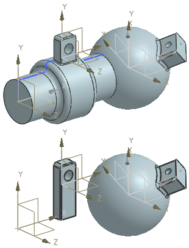

不同于面、边、基准平面和基准轴，更新模型时不会删除基准 CSYS 特征。
如果将基准 CSYS 与父几何体关联，且在更新模型时该父几何体被删除，则注意以下几项：
在部件导航器中，警报列表明基准 CSYS 已过时。
基准 CSYS 已相对于绝对原点固定。可以编辑基准 CSYS 来动态移动它，或更改它的类型并将它与不同的父几何体相关联。
在本例中，草图与回转特征是两个基准 CSYS 特征的父特征。如果删除草图与回转特征，更新模型时这两个基准 CSYS 特征及其子特征不会丢失。可以编辑基准 CSYS 特征，并在以后将它们与新的父几何体相关联。
